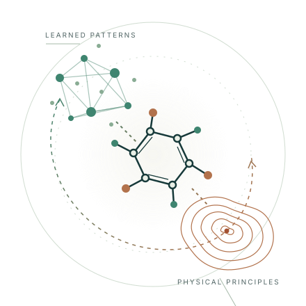
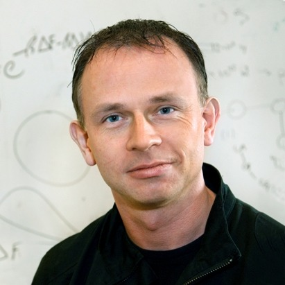

ACS Spring 2027 · New Orleans
Bridging data-driven and physics-driven ML in computational chemistry
Bringing learned representations and physical principles together to understand, predict, and design molecular systems.

- ACS meeting
- –
- Location
- New Orleans, Louisiana
- Division
- Computers in Chemistry (COMP)
Dates above are for the ACS meeting. The symposium date, room, and final program will be announced.
About the symposium
Two perspectives.
Physics-driven vs data-driven ML
Data-driven machine learning is expanding what we can predict and design. Physics-driven methods bring the constraints, energy models, and statistical mechanics that help us understand why molecular systems behave as they do.
This symposium brings these communities into conversation: where do learned priors and physical models complement each other, and what balance should we strike when data are scarce? Together, we will explore their intersection across structure, thermodynamics, kinetics, and sampling, alongside the emerging role of large language models.
Thermodynamics & Kinetics
Sampling & Monte Carlo
Invited speakers
Lucy van Dijk
Isomorphic Labs
Frank C. Pickard IV
Genesis Therapeutics
Aleksander Durumeric
Iambic Therapeutics
Devleena Shivakumar
Revolution Medicines
Aditi S. Krishnapriyan
UC Berkeley
Yuanqi Du
Microsoft Research New England
Christopher Jarzynski
University of Maryland
Peter Bolhuis
University of Amsterdam
Pratyush Tiwary
University of Maryland
David Limmer
UC Berkeley
Jutta Rogal
Flatiron Institute
Frédéric Dreyer
Prescient Design, Genentech

Gavin E. Crooks
Normal Computing
Panel discussion
What should drive
the field forward?
Is the future of computational chemistry data-driven, physics-driven, or both?
Matt Welborn
Iambic Therapeutics
Pratyush Tiwary
University of Maryland
Alex Dickson
Michigan State University
Pat Walters
OpenADMET
Dean Brown
Jnana Therapeutics
Organizers
Mia A. Rosenfeld
Iambic Therapeutics
Mingjie Liu
University of Florida
Connor Coley
MIT
Yuanqi Du
Microsoft Research
Tentative schedule
16 invited-talk slots 30 minutes per slot, including Q&A
Three sessions over one full day and the following morning. Day labels are for planning; session dates and room are to be confirmed.
Session 1: Day 1 morning
6 invited talks
| Time | Activity |
|---|---|
| – | Opening remarks |
| – | Invited talk 01 |
| – | Invited talk 02 |
| – | Invited talk 03 |
| – | Coffee break |
| – | Invited talk 04 |
| – | Invited talk 05 |
| – | Invited talk 06 |
Lunch break
– (2 hours)
Session 2: Day 1 afternoon
4 invited talks
| Time | Activity |
|---|---|
| – | Invited talk 07 |
| – | Invited talk 08 |
| – | Invited talk 09 |
| – | Invited talk 10 |
| – | Panel discussion |
Session 3: Day 2 morning
6 invited talks
| Time | Activity |
|---|---|
| – | Invited talk 11 |
| – | Invited talk 12 |
| – | Invited talk 13 |
| – | Coffee break |
| – | Invited talk 14 |
| – | Invited talk 15 |
| – | Invited talk 16 |